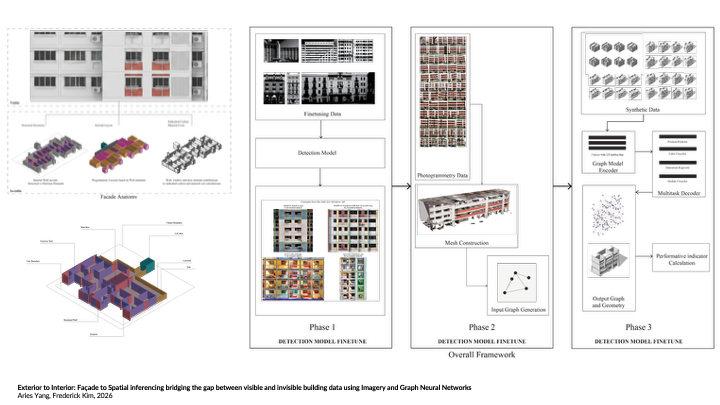

Exterior to Interior: An Image-to-Graph Framework for Predicting Structural Graphs from Facade Images
A research project connecting facade imagery, photogrammetry, detection models, synthetic data, and graph neural networks to infer spatial and structural information from visible building data.
